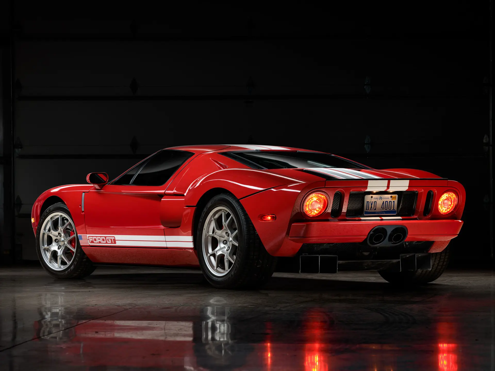
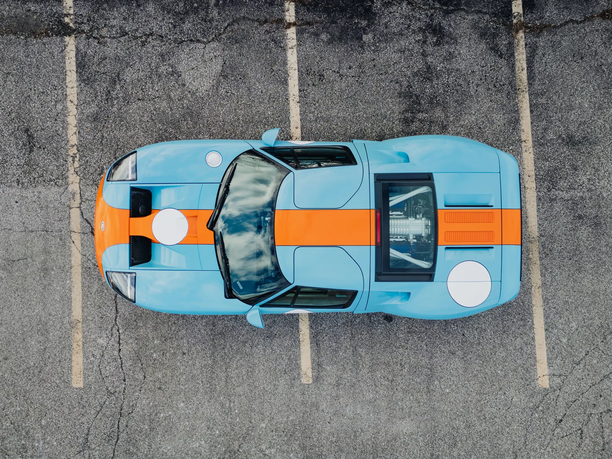

The 2005 Ford GT was created as a modern reinterpretation of the legendary GT40, the car that secured multiple Le Mans victories for Ford. While it pays clear homage to its predecessor in design and layout, it is a thoroughly modern performance machine in its own right.
At its core is a supercharged V8 engine that, while sharing its origins with Ford’s truck engines of the era, was extensively re-engineered to meet the demands of a high-performance supercar. A similar philosophy would later be applied again with the 2017 Ford GT. Like the original GT40, the engine is mounted behind the driver, maintaining the car’s racing-inspired configuration.

The chassis is constructed entirely from aluminium, keeping weight relatively low while maintaining structural strength. Paired with a 6-speed manual transmission, the GT avoids the dated feel often associated with automated manuals from the same period, offering a more direct and engaging driving experience.
With a tested top speed of around 207 mph, the Ford GT remains impressively fast even by modern standards. Much like its predecessor, it delivered performance that rivalled, and in some cases exceeded, its Ferrari counterpart, continuing the legacy of one of the most iconic rivalries in automotive history.
| Engine | 5.4L Supercharged V8 |
| Power | 550bhp |
| Weight | 1521kg |
| Transmission | 6-speed Manual |
| 0-62 | 3.8 s |
| Top Speed | 205mph |
| Year | 2004 |